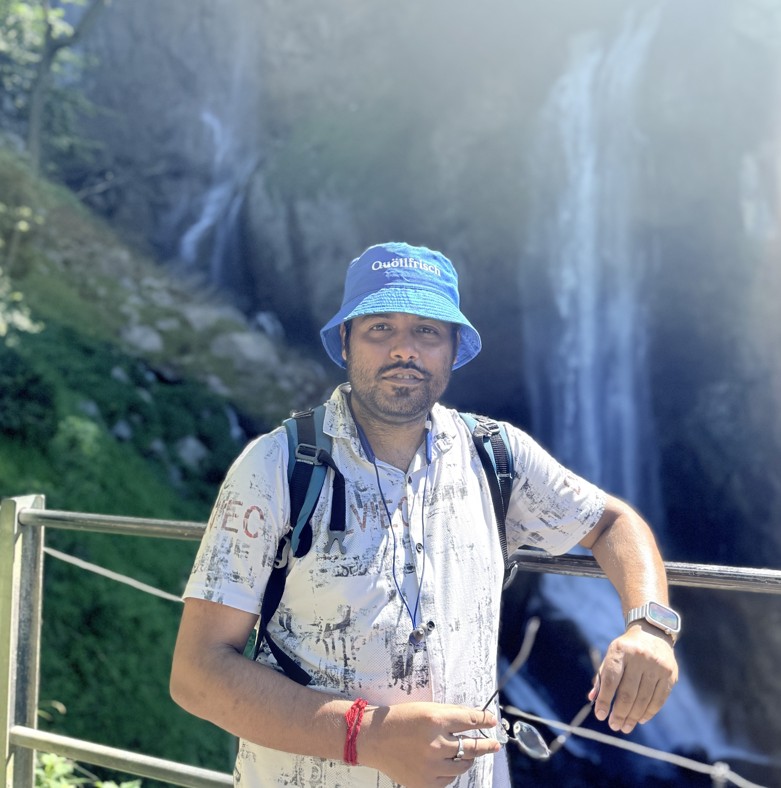

Associate Research Fellow, Institute of Cybersecurity and Cryptology (iC²), University of Wollongong
It is very simple to be happy, but it is very difficult to be simple. — Rabindranath Tagore

I am currently an Associate Research Fellow at the Institute of Cybersecurity and Cryptology (iC²), University of Wollongong, hosted by Prof. Willy Susilo, Australia.
Previously, I was a Postdoctoral Fellow at the Indian Institute of Science, Bangalore, hosted by Prof. Arpita Patra, and at the Institute of Computer Science, University of St. Gallen, Switzerland, supported by the Swiss Government Excellence Scholarship (ESKAS), where I also served as a Research Assistant. My research at St. Gallen was conducted under the supervision of Prof. Katerina Mitrokotsa.
I earned my doctoral degree as a Senior Research Scholar in the Department of Mathematics, Indian Institute of Technology Kharagpur, India, as a recipient of the Council of Scientific and Industrial Research (CSIR) fellowship. My Ph.D. was supervised by Prof. Sourav Mukhopadhyay, with collaboration from Prof. Ratna Dutta. My academic background includes a B.Sc. from Malda College, affiliated with the University of Gour Banga, and an M.Sc. in Pure Mathematics from the same university.